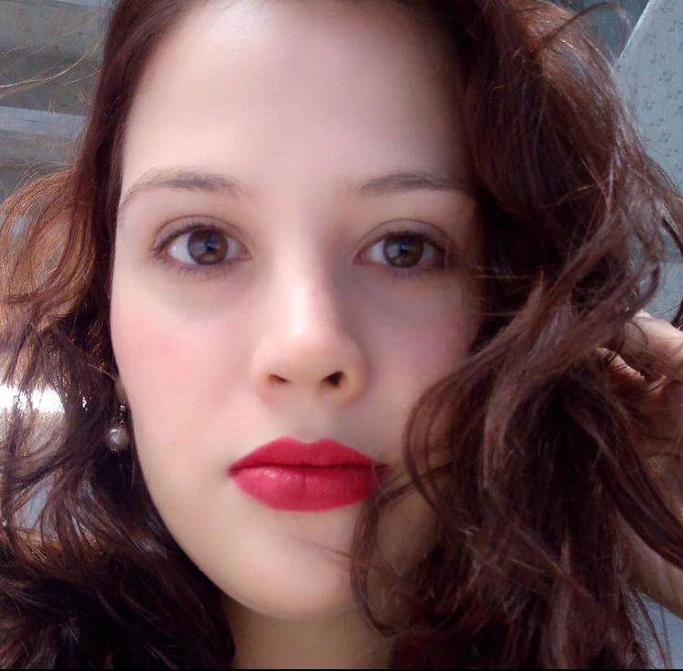

JESSICA CANAS DIAZ
Sigue navegando para conocer más sobre mi.
Sigue navegando para conocer más sobre mi.
Soy Ingeniero Electricista mención comunicaciones, graduada de la Universidad Central de Venezuela. Tengo experiencia en la ingenieria de proyectos, en el servicio al cliente, en el manejo de personal y en programación. Actualmente me encuentro en Barcelona, España haciendo estudios de Master en programación web y en programación. Desde hace unos años descubrí la pasión por programar. Me considero una persona activa, con ganas de aprender y de conocer, estoy en busca de oportunidades laborales para complementar todos mis conocimientos adquiridos a través de los estudios. Soy apasionada de los viajes, la gastronomía y la fotografía, me encanta conocer nuevos lugares, sus costumbres, sus tradiciones y capturar con mi camára momentos únicos y especiales.
AIP - Aula Informática Profesional, Barcelona
Master en Programación. Julio 2020 - Actualmente
La programación es el proceso mediante el cual creamos aplicaciones o software. para ello, usamos lo que conocemos como lenguajes de programación. El objetivo del Master en Programación es que el alumno aprenda a diseñar, codificar, limpiar y proteger el código fuente escrito en los tres lenguajes de los que hablamos, contemplando la construcción, prueba e implementación de soluciones según los requerimientos de los clientes y del programa.
Universidad Ramon Llull, Barcelona
Master en Programación Web de Alto Rendimiento. Octubre 2019 - Actualmente
El Máster en Programación Web de Alto Rendimiento (MPWAR) aporta una formación sólida de programación y tecnologías web, permitiendo a los estudiantes obtener las capacidades requeridas para incorporarse de manera inmediata a cualquier empresa que tenga un posicionamiento en Internet. Además, el máster está orientado a preparar a los estudiantes para entender el funcionamiento y estructura web de grandes empresas del sector y desarrollar software (de alto rendimiento) usando su tecnología.
Universidad Central de Venezuela
Ingeniería Eléctrica - Mención Comunicaciones. Septiembre 2010 - Julio 2018
The Electrical Engineer performs functions of design, construction, evaluation and maintenance of electrical, electronic, telecommunications, analog and digital facilities and equipment, as well as wired and wireless networks. Likewise, he is able to analyze, model, install, operate and maintain power systems at the level of generation, transmission and distribution of electrical energy; and to develop, maintain, evaluate and program control and automation systems for modern industry.
One Month
Project Manager. 2020. Online.
Learn WordPress. 2020. Online.
Benllisoft
Basic Programming (Phyton). 2019. Online.
Escuela Web
HTML5 and CSS3. 2018. Caracas, Venezuela.
Ruecker Lypsa, S.A
Pasante
Tareas:
Technoconsult, S.A
Ingeniero de Proyector Junior
Tareas:
HTML Y CSS
JavaScript
MYSQL
PHP
Python
C++
Visual Basic
Java
Linux
Docker
🇪🇸 Spanish
🇺🇲 English
🇩🇪 Deutch